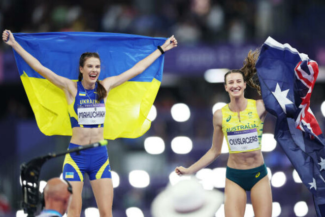

На Діамантовій лізі у Парижі (Франція) українка взяла висоту 2.10 метра, побивши рекорд Стефки Костадінової. У 1987 році представниця Болгарії стрибнула на 2.09 метра на чемпіонаті світу в Римі (Італія). Спочатку українка виграла етап Діамантової ліги, взявши планку 2.03 м. Після цього Магучіх стрибнула на 2.07 м (з другої спроби), оновивши особистий рекорд зі стрибків у висоту. А потім із першої ж спроби взяла висоту 2.10 м та встановила світовий рекорд!
